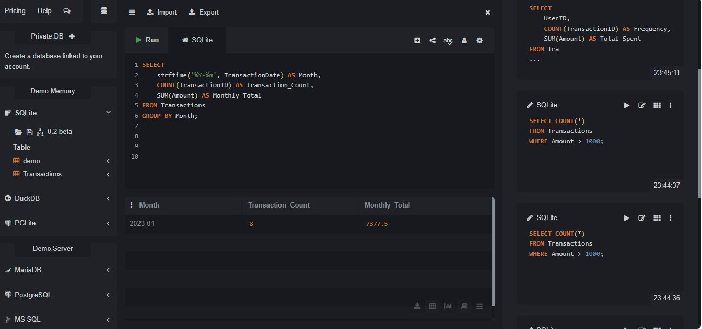
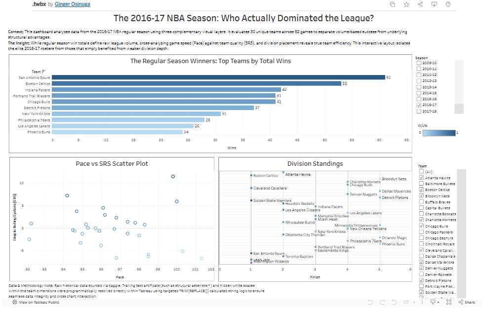
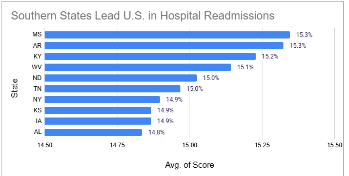
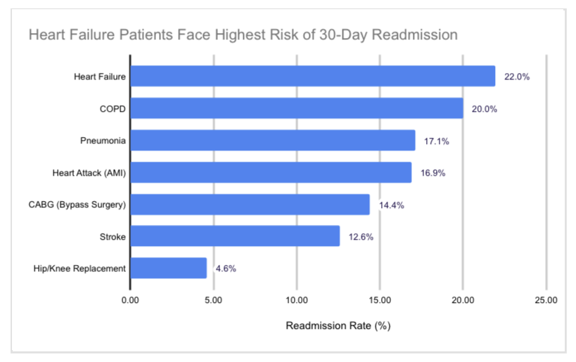
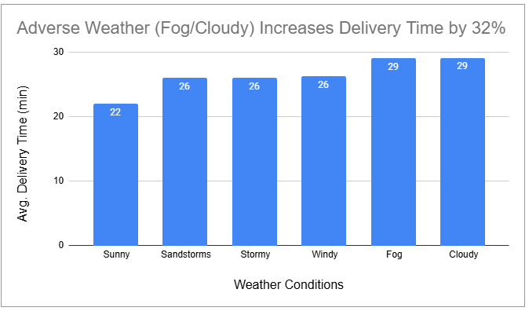
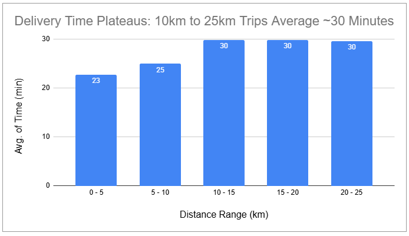
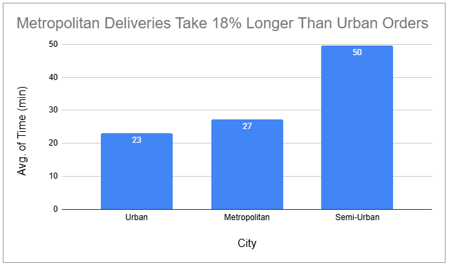
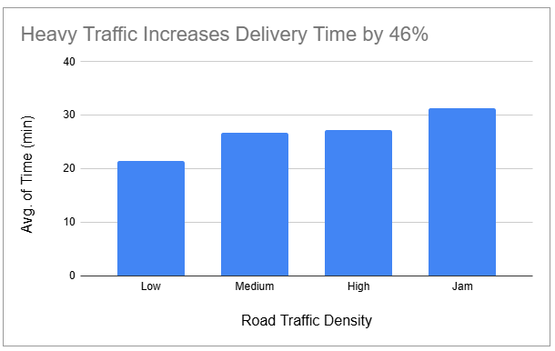
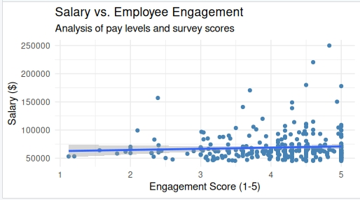

Fintech Transaction & Fraud Analysis (SQL)
Project Goal: To use advanced SQL queries and self-joins on payment processing data to detect cross-border fraud patterns, and analyze business revenue trends.

Key Insight: My analysis successfully flagged critical, short-window cross-border fraud accounts while identifying top VIP consumer profiles and driving categorical revenue growth visibility.
NBA Performance Dashboard (Tableau)
Project Goal: To use an Interactive Tableau Dashboard to analyze team efficiency, pace, SRS, and total wins of the 2016-17 NBA Season.

Key Insight: My analysis identified that game speed (Pace) is not directly correlated to total season wins, evidenced by the San Antonio Spurs.
Influencer Marketing Dashboard (Power BI)
Project Goal: To use Power BI to analyze influencer giveaway performance and visualize sales impact across diverse market categories.

Key Insight: My analysis identified that sales performance was pretty uniform across all marketing categories, with only a 4.5% variance between the top-performing "Tech" niche with 10.9M, and the lowest peforming "Gaming" niche still at 10.4M.
Student Performance Analysis (Tableau)
Project Goal: To analyze how gender demographics and subject types influence average student academic performance.

Key Insights: Male students show strong performance in math, scoring 8% higher than female students. While female students outperform males in reading and writing, averaging 13% higher scores between the 2 subjects.
Hospital Readmission Analysis (Excel)
Project Goal: To identify geographic and clinical trends driving hospital readmissions within 30-days.

The Takeaway: Southern states dominate the high-risk list; 60% of the top 10 states with the highest readmission rates are in the South, led by Mississippi and Arkansas.

The Takeaway: Heart Failure is the most critical outlier with a readmission rate near 22%, nearly 5 times higher than the rate for Hip/Knee replacements.
The Impact: This analysis reveals that chronic conditions like Heart Failure and COPD drive performance gaps far more than surgical recoveries, especially within the Southeastern U.S.
Tools Used: 🛠️ Excel | 📊 Google Sheets
Food Delivery Analysis (Excel)
Project Goal: To analyze how environmental and logistical factors impact delivery performance.

The Takeaway: Harsh conditions like fog and storms don't just slow things down—they increase delivery times by over 30% compared to clear skies.

The Takeaway: Interestingly, delivery times hit a plateau once a trip exceeds 10km; at that point, the average time stays around 30 minutes regardless of the extra distance.

The Takeaway: Navigating Metropolitan areas adds an 18% "time tax" compared to Urban routes, likely due to higher intersection density and parking challenges.

The Takeaway: Traffic "jams" are the single biggest bottleneck, nearly doubling delivery times compared to low-density traffic periods.
The Impact: My analysis identified that heavy traffic and specific weather conditions are the primary drivers of delays, increasing delivery times by up to 46%.
Tools Used: 🛠️ Excel | 📊 Google Sheets
HR Analytics Audit (R)
Project Goal: To analyze how environmental and logistical factors impact delivery performance.

Key Insights: Identified a $2,842 gender pay gap. Discovered that top performers earn 30% more on average than those on improvement plans.